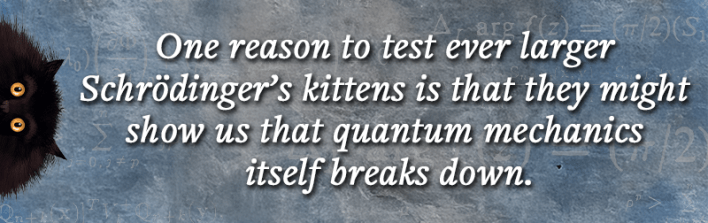
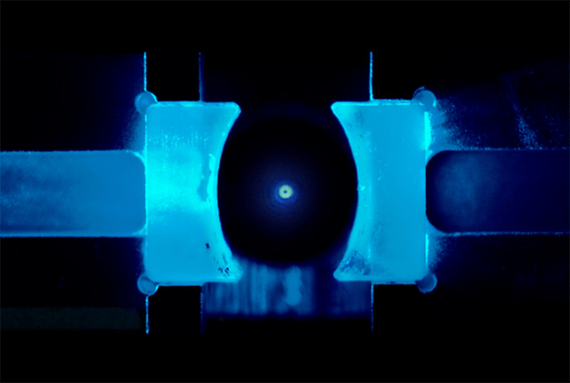
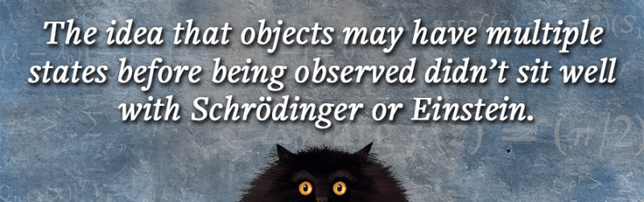
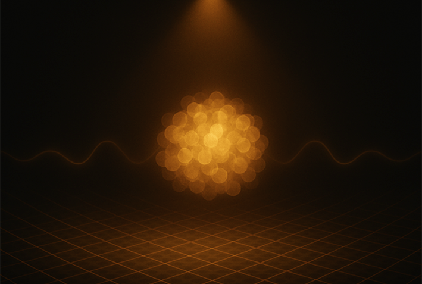
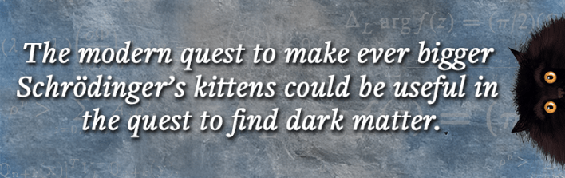

In 1935, Erwin Schrödinger had had enough.
A decade earlier, the bold Viennese physicist had transformed the new theory of quantum mechanics with his “wave equation,” describing how quantum particles could behave like waves. Since then, he had watched some researchers use his theory to concoct what he considered a ridiculous interpretation of quantum theory, which seemed to deny reality to quantum objects like atoms or subatomic particles until they were observed.
Schrödinger wrote a letter to his fellow skeptic Albert Einstein, outlining a thought experiment in which a quantum event might or might not kill a cat hidden inside a box. How ridiculous it was, Schrödinger said, to suppose that the cat could be both alive and dead before we observe it, and that mere observation could force nature to choose one state or the other.
By enabling quantum behavior to influence objects large enough for us to see—and indeed, stroke—Schrödinger wanted to expose the absurdity of giving observations the power to summon what is real.
For a century, his thought experiment has provoked debate about what it means to make a measurement or observation in quantum theory. It laid down a gauntlet to experimental physicists: Just how big can we make objects while still finding peculiar quantumness—neither this nor that—in the ways they behave? Can we place, if not a cat, then at least sizable lumps of lifeless matter (which some fancifully call Schrödinger’s kittens) in such strange quantum “superpositions?”
Read more: “How Schrödinger’s Cat Got Famous”
It’s not just an academic question. Last year’s Nobel Prize in physics was awarded to researchers who showed in the 1980s that superpositions can be created in loops of superconducting wire: components like those now used as quantum bits in the quantum computers made by companies such as Google and IBM, which achieve their formidable computational speed by processing information represented as superpositions of binary 1s and 0s.
Ultimately, experiments on Schrödinger’s kittens are about probing the limits of quantum theory itself. Is the world truly quantum all the way up, its peculiar consequences just getting ever harder to see as sizes and masses increase? Or might there be, as some researchers think, a cutoff point where quantum mechanics breaks and only the old-style classical physics will work to describe the world?
Some researchers are now seeking to make Schrödinger’s kittens consisting of tiny crystals almost as big as dust grains, that might help to resolve foundational questions in the cosmos. If these little grains have enough mass to feel one another through their gravitational attraction, placing them in delicate quantum superpositions might provide a means of testing whether gravity can—as most researchers believe, yet without hard evidence—be given a quantum-mechanical description. And their precarious nature could supply a sensitive method for detecting elusive particles like those proposed to explain the mysterious dark matter that seems to pervade the cosmos.
The Cat That Attacked Copenhagen
What was Schrödinger so upset about? Since the first mathematical formulation of quantum mechanics, devised in 1925 by German physicist Werner Heisenberg (followed by Schrödinger’s alternative wave mechanics in early 1926), Heisenberg and others, especially his mentor Niels Bohr in Copenhagen, had been claiming that the theory forced us to reconsider the very notion of what is real. According to the Copenhagen interpretation of quantum mechanics, all the theory can tell us is the chance of observing experimental outcomes when we observe a quantum system.
In general, the theory predicts several possible outcomes of a measurement, each with a well-defined probability. Before it is observed, a quantum object like an atom or a subatomic particle can’t be considered to be in any of those states; they are somehow mixed together in a superposition. Only when we observe an object initially in a spatial superposition, say, does a choice get made and it acquires a definitive position.
Bohr and colleagues insisted that we must just accept this as the way the quantum world works. Measurement somehow creates definite outcomes—elements of reality—from what was previously just a range of possible worlds. In Schrödinger’s time it was common to talk about superpositions as being in multiple states or places at once, although this is not really the right way to express the matter: A superposition just means that any one of several observed outcomes is possible.
The idea that measurement itself could have this seemingly magical effect of producing reality, and that objects may have multiple states at once before being observed, didn’t sit well with Schrödinger or Einstein. It seemed to deny any pre-existing, objective reality, contradicting what scientists had always assumed.

Schrödinger illustrated how crazy, indeed illogical, that notion was by imagining an experiment where some probabilistic quantum event such as the radioactive decay of an atom (which could happen at any moment) triggers a chain of events that leads to the cat in the box being poisoned. If the atom was, before we open the box to look, in a superposition of decayed and not decayed, then the cat must be in a superposition of alive and dead.
“His thought experiment still teaches us the full absurdity of quantum mechanics, once one includes the observer in the description,” says physicist Klaus Hornberger of the University of Duisburg-Essen in Germany, who works on the quantum physics of objects at the nanometer scale.
Imagining a subatomic particle in “two places (or states) at once” didn’t seem so challenging in Schrödinger’s time, since in those days no one expected to be able to observe them individually anyway. But by amplifying the idea up to the macroscale, and applying it to a property that has to be either one thing or the other (how could anything be both alive and dead at once?), Schrödinger was raising the stakes to expose the craziness of the Copenhagen denial of a pre-existing objective reality.
However, many physicists now see the thought experiment a little differently. Not only do we now know that quantum superpositions are real, but since the 1970s experiments have shown that observational outcomes don’t seem to be predetermined before a measurement is made.
Nonetheless, at our everyday scales, objects really do seem to be either this or that, whether we look at them or not, just as classical physics supposes. So, when does quantum become classical? Do quantum superpositions just get ever harder to see as objects get bigger, or is there some more fundamental principle that prohibits quantum superpositions as big as Schrödinger’s cat?
Wavy Matter
Superpositions are typically precarious. According to quantum mechanics, an observation destroys them—but that’s not really a question of whether we look at them or not. It’s enough to destroy a superposition if any information about the state of the object leaks out into its environment where it can potentially be detected: It’s all about whether an observation could be made. If a photon of light bounces off the object, or if the object itself emits a photon, we might be able to work out where the object is by observing the photon—and that will destroy the superposition.
This “leakage” of information about a quantum state because of its interactions with its environment, and the consequent destruction of its “quantumness,” is a process called decoherence. The bigger the object gets, the harder it becomes to suppress any such interactions. This, most researchers think, is why it’s challenging to see quantum effects at large scales: not because they are inherently unstable for large things, but because large things are hard to isolate and to shield from decoherence.

GLOW IN THE DARK: The central bright dot is a silica nanoparticle levitated in a vacuum by electric fields. Its thermal jiggling has been reduced so much that its effective temperature is just a few millionths of a degree Kelvin above absolute zero, and it is in the lowest-energy quantum state possible: the ground state. Credit: Aspelmeyer Group / University of Vienna.
Seeing atoms in superpositions is fairly straightforward. One way is to use them in the famous quantum double-slit experiment, where a beam of particles is fired through two closely spaced slits in a screen. Schrödinger’s equation described all quantum objects as wave-like entities—and a key property of waves is that they can interfere with one another, their peaks and troughs amplifying or cancelling out to create an interference pattern.
In the double-slit experiment, such interference between the waves emanating from each slit creates a characteristic pattern in the particles detected on the far side: a series of “bright” bands where many particles are detected, separated by dark bands where few of them are. Interference of atom-waves was first demonstrated in the early 1990s. It only appears if the particles are in a superposition; that is, they can be considered to go through “both slits at once” and interfere even with themselves. Measure which slit each particle goes through and the superposition is destroyed—the interference pattern vanishes.
Can we scale such experiments up? Will entire molecules behave this way, too? In 1999, Markus Arndt of the University of Vienna, who today is at the forefront of experimental work to make large quantum superpositions and was then working in the team of future Nobel laureate Anton Zeilinger, showed that indeed matter-waves made from fullerene molecules, each containing 60 carbon atoms, linked into hollow spherical cages, will display interference.
Since then, Arndt has been demonstrating interference in ever larger molecules. In 2019, his team reported quantum superpositions of organic molecules containing up to 2,000 atoms, with masses of 25,000 daltons. (One dalton is about the mass of a single proton or neutron, the particles of the atomic nucleus.) In these experiments, the particles are usually fired not at double slits but at an entire grid of parallel slits made from light itself: laser beams prepared as “standing waves,” where they bounce back and forth between mirrors to create an interference pattern of light and dark.

Making a “big” positional superposition isn’t just about using large objects, though. It also depends on how far apart the two observable position states—the centers of gravity of the objects—are. To measure this scale, Hornberger has introduced the notion of “macroscopicity.”
“The macroscopicity value quantifies how perplexing a quantum effect is to a classical physicist,” he says. If, say, you made a superposition for a golf ball in which the two positions differ by less than the width of an atom, that might have a lower macroscopicity than a superposition of a fullerene molecule with a “here” in New York and a “there” in San Francisco.
Last year, Arndt’s group, collaborating with Hornberger, reported a new record in the macroscopicity of a quantum object. They showed that they could create superpositions for tiny crystals of sodium about 8 nanometers across, containing about 7,000 atoms. The centers of mass of the two superposed locations were up to 133 nanometers apart—more than 10 times the size of the particles.
Hornberger thinks that producing matter-wave interference for particles perhaps about 10 times more massive than the sodium nanocrystals “will get really tough.” He suspects that to scale up to this level, a different method may be needed: to levitate nanoparticles cooled so that they are in the lowest possible quantum energy state (the ground state).
Read more: “Reality Exists Without Observers? Boooo!”
Markus Aspelmeyer at the University of Vienna is pioneering efforts to do that. In 2020, he and his coworkers reported that they had cooled down particles of silica about 150 nanometers across, containing about 100 million atoms, so that they spent at least 70 percent of their time in their ground state rather than boosted by thermal jiggling into higher-energy states. To do this they levitated the particles in an optical trap, suspending them in a field of intense laser light.
The following year, Aspelmeyer’s team, as well as another group in Zürich, Switzerland, showed that they could make such particles even colder and more securely lodged in their ground state by ditching the optical trap and just using light to apply little nudges to keep the particles in position. But coaxing lumps of matter this big into a superposition is another matter, and no one has yet achieved it.
Arndt, though, is optimistic. “We see a realistic path toward [superpositions of] particles in the range of tens of millions of daltons in the coming years,” he says. That “would already be a hundredfold improvement in mass and up to six orders of magnitude in macroscopicity compared to the current world record set by our sodium metal particle.”
Seeking Quantum Gravity
One reason to test ever larger Schrödinger’s kittens is they might show us that quantum mechanics itself breaks down before we reach the macroscale. Some researchers have long suspected this could happen.
In one theory, proposed independently by Hungarian physicist Lajos Diósi and British mathematician Roger Penrose, quantum objects in superpositions undergo a spontaneous “collapse” to a well-defined location with a probability that increases as the object gets larger, such that at some scale collapse will become inevitable no matter what we do. Penrose thinks such a collapse is necessary to prevent quantum mechanics from conflicting with general relativity, the theory of gravitation devised by Einstein in 1916.
In Einstein’s theory, massive objects deform spacetime itself, forcing other objects to travel along trajectories that deviate in just the way expected from what we have traditionally called the force of gravitational attraction. Penrose’s concern was that, when objects get big enough to exert a significant gravitational force, a superposition of two locations would create two different geometries of spacetime—a situation that ought to involve an enormous amount of energy. Spontaneous collapse would switch off quantum effects like superposition before that uncomfortable circumstance arises.

MATTER WAVE IN THE SPOTLIGHT:A computer-generated representation of a cluster of sodium atoms in a delocalized state, where the wave function that describes the positions of the atoms is somewhat spread out over space. Only when the cluster enters the “spotlight” so that its position is measured do the atoms acquire definite locations. Credit: Arndt Group / University of Vienna.
But perhaps there is no conflict between quantum mechanics and general relativity, because gravity itself is a quantized force, like electromagnetism. Even though we lack a theory of quantum gravity consistent with both quantum mechanics and general relativity, most physicists think gravity is indeed quantum in nature. The first person to suggest this was physicist Richard Feynman, in 1957. Feynman even suggested a thought experiment to test the idea—but he didn’t imagine it would ever be possible to carry out real experiments.
That, however, is the only way to find out. “I see no reason at all to believe that we have already a complete picture” about the putative quantum nature of gravity, says Arndt. “Personally, I would be shocked if the principles of quantum theory would break down” at larger scales.
The goal to proving that, Aspelmeyer says, is to make “systems that have enough mass to produce a measurable gravitational field, and that are sufficiently delocalized [that is, in superpositions with large enough macroscopicity] that the gravitational phenomena cannot be described by classical general relativity anymore.” He and his colleagues have proposed an informal measure of the usefulness of such objects for exploring quantum gravity that is somewhat analogous to Hornberger’s macroscopicity, and which they call, with a nod toward Schrödinger, “quantum cattiness.”
One way to use “quantum-catty” objects to probe quantum gravity was proposed two decades ago: to see if gravitational interactions can be used to create the strange quantum effect called entanglement.
This is perhaps the most perplexing and counterintuitive of all quantum phenomena. As Einstein pointed out in 1935, if two quantum objects interact—if they “feel” one another’s presence in some way—then thereafter quantum mechanics says that they will act essentially like a single quantum entity: The two original objects have become entangled.

This has bizarre consequences. For example, we can find out the properties of one object by looking at the other. Einstein argued that, if the Copenhagen interpretation was right and quantum properties weren’t fixed until they are observed, this seemed to imply that the observation of one of an entangled pair in one place instantaneously affects the other, no matter how far away it is. Such instantaneous action at a distance is forbidden by Einstein’s theory of special relativity, and Einstein felt that this apparent paradox showed that quantum mechanics cannot be the whole story.
But in fact, quantum entanglement doesn’t require action at a distance because the entangled pair aren’t separate entities at all. Their properties have become “nonlocal”: not fixed to the particles themselves. However odd this seems, it has now been confirmed experimentally countless times.
It was Schrödinger who, also in 1935, called this phenomenon entanglement. The reason it can be used to look for quantum gravity is that just about the only way two objects can become entangled by interaction is if the force of interaction is itself quantized. So, if two masses could be entangled solely via their gravity, it would be proof that gravity is quantum.
The challenge in seeing such gravity-induced entanglement, though, is that the particles would have to be big enough that their mutual gravitational attraction would be strong enough to matter, yet not so big that it becomes impossible to hold them in a quantum state.
Physicist Sougato Bose of University College London and his coworkers proposed an experiment in 2017 in which two nanocrystals are placed in superpositions while at a distance far enough apart (about 100 micrometers) that they don’t feel each other’s electromagnetic fields but interact only through gravity. The superpositions of locations would mean that the gravitational interactions of the different particle positions would differ, creating measurable interference effects.
Read more: “When Reality Came Undone”
To keep such relatively big masses in superpositions, says Bose, you need to ensure that they are extremely well isolated from any interactions in their environment. A single molecule of gas or a photon hitting one of them could be enough to collapse the superposition. So, they would have to be levitated in an extremely high vacuum and screened from any stray electromagnetic fields.
The key challenges for increasing the “gravitational cattiness” of Schrödinger’s kittens, says Aspelmeyer, are “to extend our current quantum control techniques to larger masses,” and to reduce the decoherence caused by the impacts of gas molecules or stray electromagnetic radiation. Despite the formidable technical demands, Arndt says that the idea of testing for quantized gravity this way is worth pursuing.
So, could things really be quantum all the way up? “I see no compelling reason why the laws of quantum theory should cease to hold at some scale of macroscopicity,” Hornberger says. “But we simply don’t know, and there are good reasons to suspect a fundamental change once general relativity kicks in.” But, he adds, “I believe if quantum theory is ever to be superseded by something more fundamental, I guess it will be even more crazy.”
No Limits?
Just under a century ago, Schrödinger wanted to find an extreme scenario that would expose the flaws, as he saw them, of the Copenhagen interpretation of quantum mechanics. What he ended up doing was a lot more. He pushed generations of physicists to delve even deeper into the precarious character of nature itself.
Arndt says the modern quest to make ever bigger Schrödinger’s kittens could be useful in the quest to find dark matter—the stuff proposed to explain the “extra” gravity that seems needed to hold rotating galaxies together. Many researchers think this putative invisible matter is composed of unknown and highly elusive particles, but no such thing has ever been seen. But if dark-matter particles interact, however incredibly rarely, with ordinary matter, might their presence be revealed by their ability to trigger the collapse of precarious superpositions? Delicate superposition states of large objects might also reveal the effects of entirely new forces of nature beyond the four already known, such as the “fifth force” that some physicists have long suspected to exist. If such a fifth force couples a superposition to its environment, that could induce a collapse.
And what of the cat itself? Physicists today are still tantalized by the question of what it would feel like, if anything at all, for a living, breathing, thinking organism to be placed in a superposition. Ethical concerns aside, could scientists ever perform Schrödinger’s original experiment? It’s not clear what a live/dead superposition could even mean, given that life doesn’t have a well-defined quantum description. But might we at least place a tiny living organism like a bacterium in a superposition of positions?
Arndt thinks it might be possible, at least for a virus. “If we get the money for it, we will certainly do our best to get there,” he says. “There are very many challenges, but it is not impossible.”
And then a living cell? “Give me more time to think about it,” he says, smiling. 
Lead image: Tasnuva Elahi; with images by andrei_sikorskii and Tryfonov / Adobe Stock